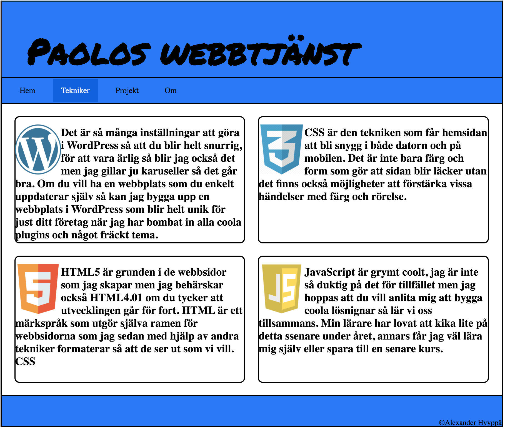

Paolos webbtjänst

Mitt första projekt gjorde jag för den stora fruktgrossisten Eva som inte bara har flera olika typer av frukt utan också väldigt många lådor med frukt. Coolt var det att få jobba med Eva, mätt var jag mest hela tiden också.

Mitt första projekt gjorde jag för den stora fruktgrossisten Eva som inte bara har flera olika typer av frukt utan också väldigt många lådor med frukt. Coolt var det att få jobba med Eva, mätt var jag mest hela tiden också.
